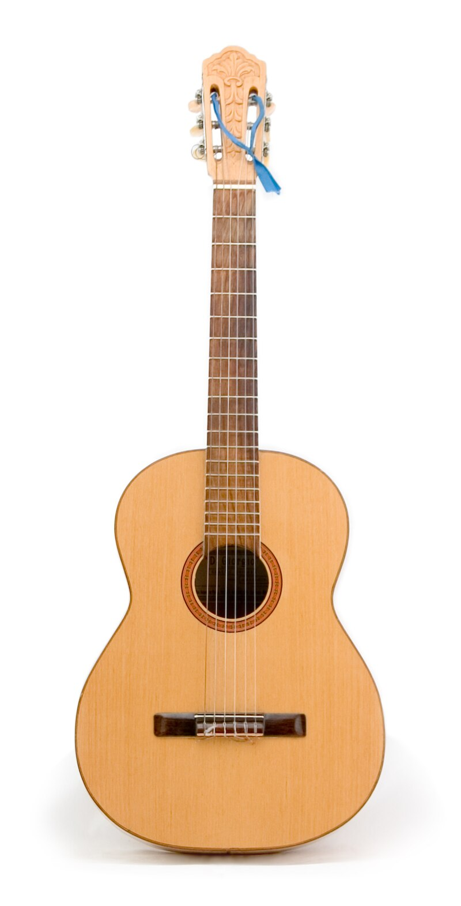
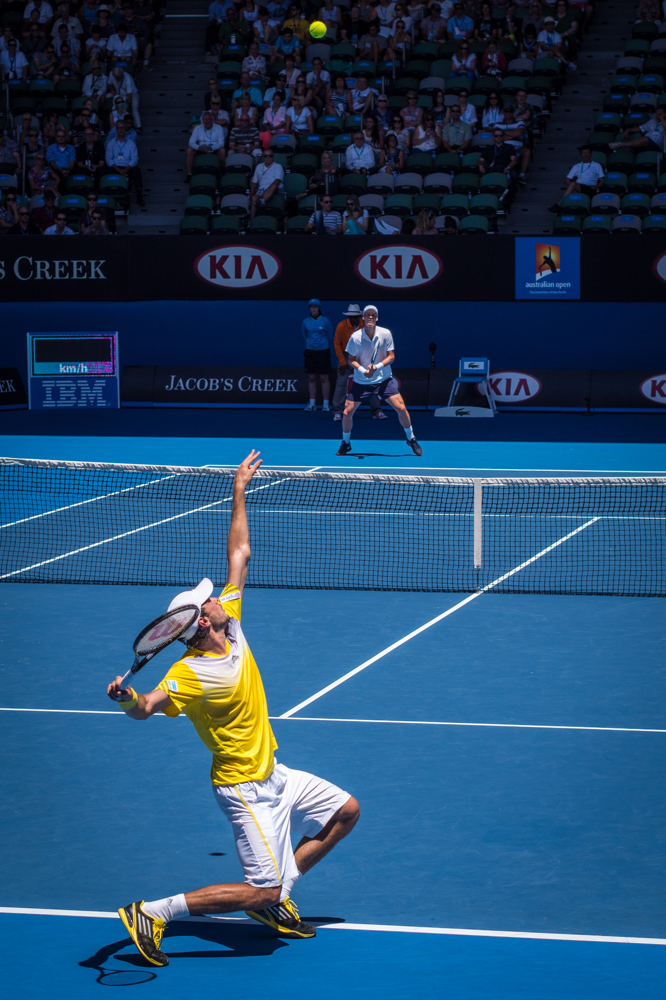
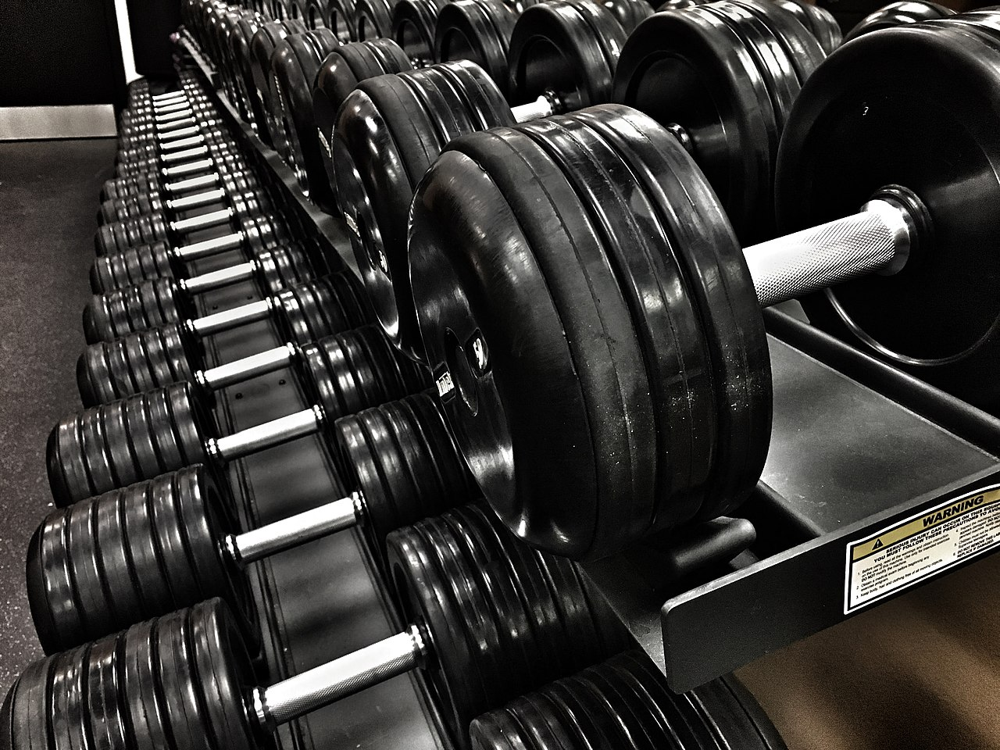

My Hobbies
Playing Guitar
I enjoy playing the guitar in my free time. I love rock and metal music so I have been trying to learn it as a pastime. It has definetly been a challenging endeavor with many steep learning curves to climb, but the satisfaction of playing a new song correctly for the first time is one of the best there is. I started with an acoustic but I have upgraded to almost exclusively playing on my electric at the moment. Blues music has been a recent passion of mine and is something I hope to master one day, I have started learning more blues scales, chords, and licks to better improve my skills.
Tennis
I started playing tennis right before the start of high school, but I soon fell in love with it and I played 3 years of High school tennis as well as years of tournaments outside of school. Although I dont have the time I once had to dedicate to the sport, I love to play when I get the chance and I love to watch a good match if it is on TV and get out on the courts if the weather is good. When I am back in Austin, there is an abundance of courts near my house so it is really easy to just pick up a set of racquets and go. The summer heat has slowed down my playing time, but hoping to play more in the Fall and Winter months.
The Gym
I've grown to love the gym as it has become a sanctuary for me this year. I started January when I decided to prioritize my health and fitness and the gym has not only transformed my physical well-being but has also become a source of mental clarity and stress relief. I love the rush of endorphins that hit after a workout and I have made an effort to go everyday in the mornings. I feel as if working out in the mornings seems to start my day off right and makes me feel more productive in the mornings as well. The gym has affected other parts of my daily routine as well, making me focus more on my nutrition, sleep, water intake, and other factors that are important for progress in the gym and just everyday wellbeing. I can definetly say this addition to my dailty routine has added immense benefits./p> 
AI Generated Page Prompt
Make me an html page that lists hobbies out in order, Add sections for each of the hobies to add a paragraph of text for explanation and also add an area for an image. Add a navbar at the top with the home page (index.html) and all other links populated on the side bar as well. Add custom styling classes for all sections and divs. Include comments explaining all styling and their respective purpose.